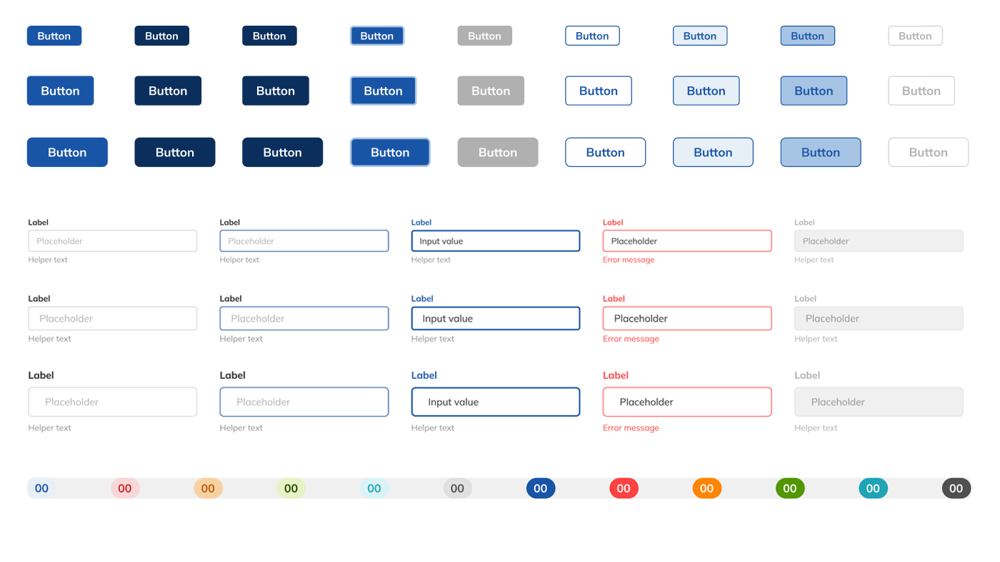
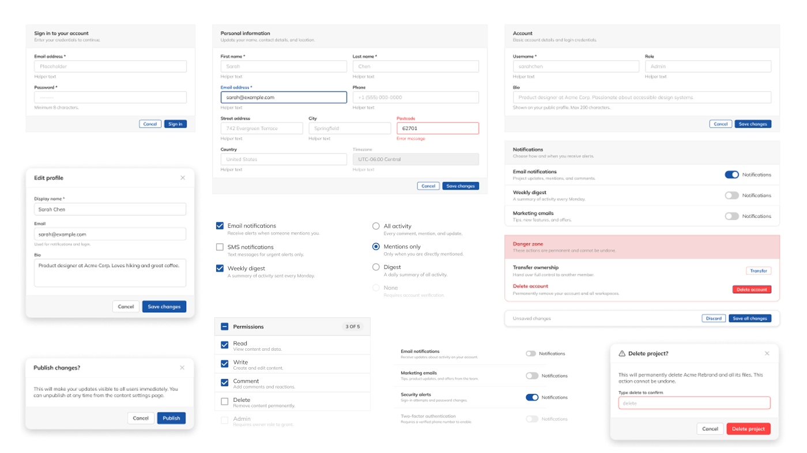
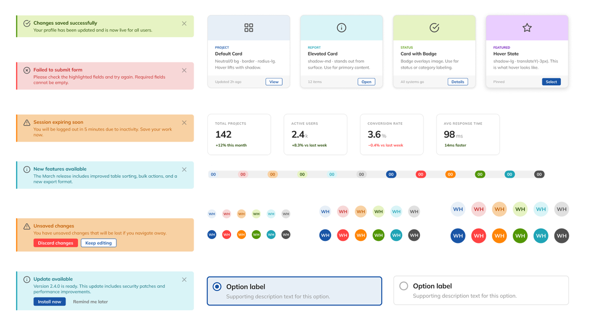
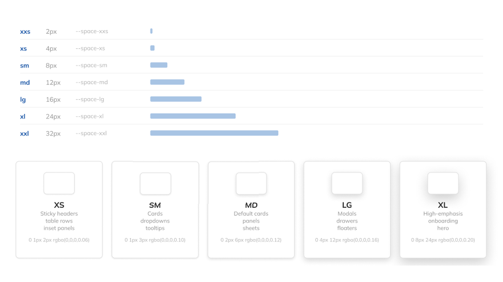
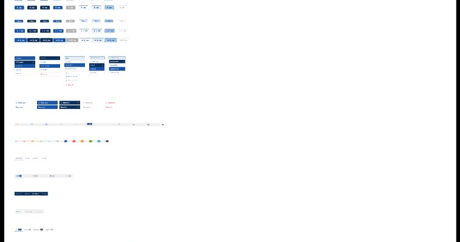
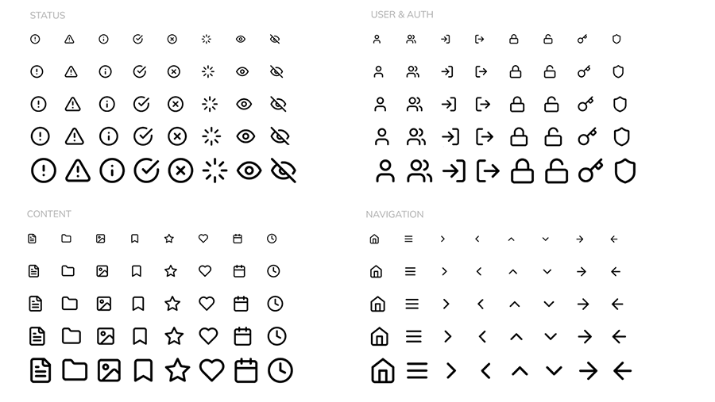

A problem I've been trying to solve for most of my career
Every product I've ever worked on has had the same gap. You finish a design — screens, components, states, edge cases, the whole thing — and then it goes to engineering. And something gets lost in that handoff. Colors are close but not exact. Spacing is approximate. Components get rebuilt from scratch instead of consumed from a shared library. A button you carefully designed in six states ships as two. The design and the product slowly diverge, and every future design review becomes a negotiation about what actually counts.
The frustrating part was never the effort. Designers put enormous work into their designs. The question I kept coming back to was: why can't that effort translate directly into something developers can consume — something scalable, consistent, that grows with the product and doesn't require a translator sitting between design and engineering?
I never had a smooth answer. Design tokens helped. Shared libraries helped. Better Figma handoff tooling helped. But it was always partial — always dependent on discipline and convention and hoping nobody went off-script. There was no structural guarantee of consistency.
Two technologies arrived that I believed could finally change this: the Figma Plugin API — which lets you generate and manipulate design files programmatically — and AI tools capable of writing production-quality code from design intent. I didn't want to read about them. I needed a real project to find out if they actually solved the problem or just made it easier to paper over.
A note on the name: Acme is a nod to Looney Tunes. Wile E. Coyote spent his career ordering experimental Acme products — jet-powered roller skates, portable holes, giant magnets — all in pursuit of the Road Runner. Powerful in theory. Unpredictable in practice. The design-to-dev handoff problem felt exactly like that: always one more tool away from being solved. The difference here is the Acme gear finally worked.
Enterprise CRM — a demanding test
I've spent a significant part of my career on modernization work — taking complex, legacy enterprise products and redesigning them with current standards. That work demands design systems. I've built them, watched them drift, rebuilt them. Enterprise CRM was the right domain to test against: complex data requirements, dense UI patterns, AG Grid for data tables, multi-state components, a product that grows over time and needs to stay consistent across a growing feature surface. If the approach worked here, it would work anywhere I'd actually need it.
The handoff was always a translation step.
And translations always lose something.
Token values diverge between Figma and code. A developer adjusts a border radius because it looked wrong in the browser. A designer adds a variant directly in Figma without updating the documentation. A spacing value gets rounded. A color gets eyeballed. Six months in, the system has fractured into multiple versions of itself — and nobody's sure which one is correct. This isn't a discipline problem. It's an architecture problem. The design and the code were never the same thing — they were always two separate artifacts that had to be manually kept in sync. I wanted to know if that was actually necessary.
One file as the source of truth. Everything else generated from it.
I wrote a Figma plugin that generates the entire Acme Design System component library programmatically from a single HTML master file — a living style guide that defines every token, variant, and state. Run the plugin and it rebuilds the Figma library from scratch. The same tokens feed a developer-ready CSS file. There's nothing to keep in sync because there's only one thing to change.
Claude Code — Anthropic's agentic coding tool — was central to building the plugin. Rather than writing hundreds of lines of Figma Plugin API code by hand, I directed Claude Code at the architectural level: specifying what each component needed to do, reviewing what it generated, catching API constraints it didn't know, and iterating. It handled implementation velocity. I handled design judgment and system architecture.
The third layer is Figma MCP — a live connection between the AI conversation and the Figma file itself. It's what closes the feedback loop the plugin opens. When you make an exploratory change directly in Figma, MCP lets me read those exact values back out: fills, font sizes, padding, corner radius, all of it. No screenshots, no exports, no manual inspection. The change can be read, assessed, and codified back into the source file programmatically.
"Changing a spacing token means editing one value in one file and running one command. Every component in Figma rebuilds. The CSS updates. Nothing drifts because nothing is maintained separately."
"The design effort and the developer artifact are finally the same thing. That's the answer I'd been looking for."
The upfront investment was significant
Learning the Figma Plugin API — its constraints, its quirks, its unintuitive edge cases — and building component generation at scale was a much larger effort than placing components by hand. This is not the fast path to a component library.
Maintenance economics change completely
Once the infrastructure exists, every future change is fast and safe. Adding a new density variant to the data table was one array edit and one plugin run. That's the payoff — not the initial build, but everything after it.
Vibe coding — but experience was the quality filter
There's a term that's emerged for the way this project was built: vibe coding. You direct at the intent level. You describe what you want, the AI implements it, you review the output and iterate. You never write the code yourself. That's an accurate description of the method here — I didn't write a single line of Figma Plugin API code by hand.
But vibe coding gets misunderstood. The popular version of the story is that AI lowers the bar — that anyone can build anything now regardless of experience. That wasn't what happened here, and I think it's worth being direct about why.
AI handled implementation velocity.
Experience handled everything that mattered.
Twelve-plus years of shipping enterprise products — design systems that drifted, handoffs that broke down, AG Grid integrations that revealed token architecture gaps — that's what determined the quality of the output. The AI generated technically correct code. I caught the things that were architecturally wrong. Those are different skills, and only one of them transfers from the screen to the product.
Concrete examples: the AI's first pass at component variants stacked them positionally — valid code, wrong architecture. I knew immediately because I'd seen what happens when variant structure doesn't reflect semantic intent. The token naming came out descriptive by default — blue-500 style — and I pushed it to semantic contracts because I'd watched descriptive naming break down across a product family. The AG Grid integration required specific token granularity that only became obvious once I'd mapped the full variable surface.
None of that comes from reading documentation. It comes from having built these things, watched them fail in production, and rebuilt them with better judgment the second time.
Implementation stopped being the bottleneck
5,700+ lines of Figma Plugin API code, 23 commands, 20+ component types. Writing that by hand would have taken weeks and put the project out of reach. With AI handling implementation, the constraint shifted entirely.
The right question became "what to ask for"
Knowing what a production-grade component system actually needs — the edge cases, the architectural decisions, the constraints that only surface when you ship — that's what turned generated code into a system worth using.
"The experience doesn't become less relevant when AI writes the code. It becomes the differentiator."
Naming conventions designed to scale — across products, teams, and frameworks
One of the recurring failures I'd seen in design systems wasn't drift between Figma and code — it was naming that made sense for one product at one moment in time, then broke down the moment a second product entered the picture. blue-500 is a description. --color-brand-primary is a contract.
The token naming convention here is built as a contract — between design and engineering, between the current product and the next one, between the system today and the system two years from now.
This wasn't free — and that decision was deliberate
I started this project on a free Claude plan. It hit a wall quickly. The conversation context needed to hold 5,700+ lines of plugin code across dozens of iterative sessions, generate and debug complex Figma Plugin API calls, and maintain architectural continuity across the full build. Free tier limits made that impossible at the scale this project demanded.
I upgraded to a paid plan specifically to continue. Claude Code — the agentic coding capability that wrote and iterated on the plugin — requires a paid subscription. Figma MCP, the live connection that lets Claude read directly from my Figma file, also requires it. So does the extended context window that keeps the full plugin in memory across a long working session.
That upgrade was a real decision, not an afterthought. It reframed the project from a free experiment into a deliberate investment in understanding what these tools could actually do at full capability. The question I was really asking changed: not "what can AI do?" but "what does it cost to use AI seriously, and is the output worth it?"
Context limits mid-build
Holding the full plugin code in context across iterative sessions, debugging component generation, and maintaining architectural decisions across dozens of turns exceeded free tier limits. The work stalled.
Claude Code + Figma MCP
Agentic coding that could write, test, and iterate on the plugin autonomously. Plus the live Figma connection that closes the design-to-dev feedback loop. Neither is available without a paid plan.
The technology taught me things the tool hides from designers
Going deep on the Plugin API surfaces constraints you never encounter designing by hand. Those constraints turned out to be useful knowledge — they clarified what "component architecture" means at an implementation level.
A complete system across a realistic enterprise domain
The library covers everything a production CRM needs — not a curated portfolio subset, but the full surface area including the hard parts.
AG Grid — where most design systems stop trying
I've shipped AG Grid across multiple enterprise products. There's a pattern that repeats without exception: teams start with a simpler grid, users get comfortable, and then the feature requests start. Column reordering. Multi-column sorting. Row grouping and tree structures. Saved grid layouts. Pinned columns. These aren't edge cases — they're the features that define a serious data product, and users who've had them once won't accept a grid that doesn't.
AG Grid ships all of this out of the box. The real cost of choosing a lighter grid isn't the initial build — it's the second year, when you're retrofitting features AG Grid solved years ago.
That experience shaped how far the design system needed to go. Most systems stop at the grid itself. But the features users actually demand live around the grid: the toolbar that controls it, the panels that configure it, the header states that communicate what it's doing. So I built all of it.
DataTable — 5 density variants
UltraCompact 24px through Spacious 56px. All row states, loading skeletons, empty states, active filter bars. Structured to match AG Grid's actual visual architecture, not a simplified approximation of it.
Toolbar + Chooser + Views + Headers
Grid Toolbar (search, filter pills, save view, export). Column Chooser panel (show/hide, reorder, reset). Saved Views dropdown. Column Header states (sort asc/desc, filter badge, combined).
A complete documentation set — six handoff docs plus a master reference
Alongside the Figma plugin and component library, the Acme Design System ships with a full suite of handoff documents — one for every dimension of the system a designer or developer needs to work from. Each document is a standalone HTML reference, consistently branded and cross-linked.
The work
Screenshots from the Figma file. Replace placeholder blocks with exported Figma screenshots — recommended 1600px wide at 2x for retina.






Start with the AG Grid theme, not the button components. Mapping tokens to AG Grid's 200+ CSS variables forces every important architectural decision first — what the spacing scale needs to cover, what "density" means as a property, which semantic color tokens are necessary versus merely convenient. Starting from the hardest constraint would have produced a cleaner architecture faster.